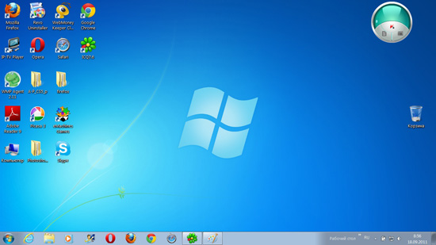

Виды операционных систем
Операционная система (ОС)
— комплекс программ, позволяющий пользователю общаться с компьютером, управляющий устройствами компьютера, программами и информацией, хранящейся в памяти компьютера.При включении компьютера операционная система начинает автоматически загружаться с диска в оперативную память компьютера и остается там до выключения компьютера. ОС все время находится в рабочем состоянии. Загрузка ОС из долговременной памяти компьютера в оперативную называется загрузкой компьютера.
ОС выводит на экран монитора приглашение к работе в какой-либо форме. В ответ пользователь дает команду на выполнение конкретного действия. Если такая команда знакома ОС и в данный момент времени может быть выполнена, то ОС ее выполняет, если нет — пользователю выдается соответствующее сообщение. После этого ОС ожидает следующую команду пользователя. Такой режим работы называется диалоговым режимом.
У современных ОС диалоговый режим графический.
B графическом режиме
пользователь может задавать команды ОС, выбирая их из различных меню. При такой организации диалога командам ОС соответствуют определенные значки (небольшие картинки).ОС позволяет пользователю работать с другими программами. Она находит программу в долговременной памяти (на диске), загружает ее в оперативную память и заставляет процессор выполнять команды данной программы. В оперативную память может быть загружено несколько программ. Такой режим работы называется многозадачным. . ОС также организует и контролирует работу всех устройств компьютера.
